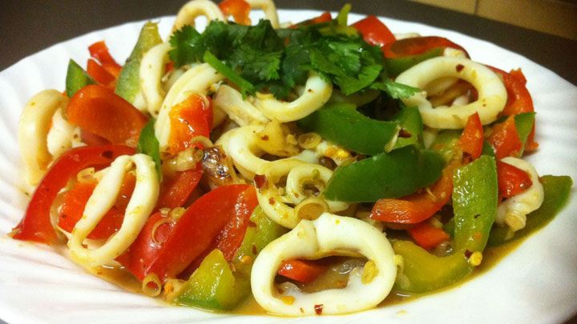

Chi Tiết Sản Phẩm
Mực xào cần tỏi tây
hMực là nguyên liệu để chế biến rất nhiều món ăn ngon từ các món nhậu cho đến các món ăn trong bữa cơm gia đình. Các món ăn từ mực khá phong phú như: chiên, hấp, xào, nướng,... Nhưng, món xào được nhiều người yêu thích hơn cả đặc biệt là món mực xào cần tỏi tây, món ăn này hấp dẫn, lôi cuốn tất cả mọi người kể cả nam lẫn nữ, người lớn đến trẻ nhỏ ai ăn cũng có thể nghiền. Vậy hôm nay PasGo xin phép chia sẻ với các bạn bí quyết ít ai biết và cách làm mực xào cần tỏi ngon này nhé.